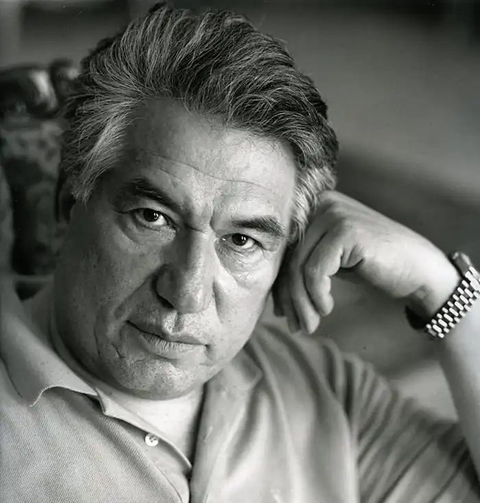
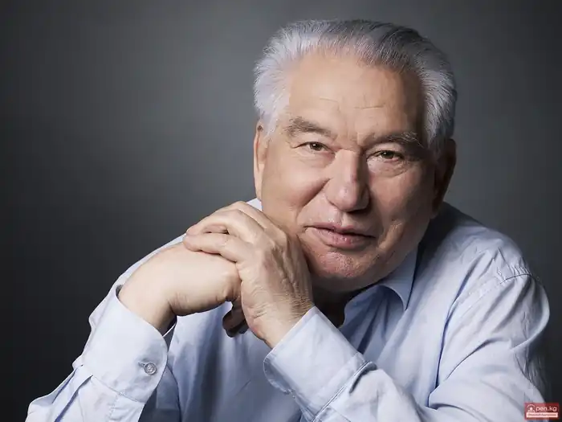
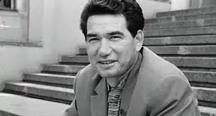

АЙТМАТОВ, ЧИНГІЗ (нар. 12.12.1928, аїл Шекер, Киргизстан — пом. 10 червня 2008, м. Нюрнберг, Німеччина) — киргизький письменник.
Айтматов Чингіз народився 12 грудня 1928 року в аїлі Шекер, що у Талаській долині, в сім'ї партійного працівника. Його батько, Торекул Айтматов, — один із перших киргизьких комуністів — працював секретарем Шернзького обкому партії. У 1937 році батька репресували, після чого сім'я змушена була переїхати в аіл. Трудовий "стаж" майбутнього письменника розпочався у десять років, а з чотирнадцяти йому довелося виконувати обов'язки секретаря аїлради (йшла Вітчизняна війна, і дорослі чоловіки були на фронті), вирішуючи найскладніші питання життя великого села. У сім'ї Айтматова розмовляли і киргизькою, і російською мовами, і це визначило двомовний характер творчості Айтматова.
"Кожний час має свої вимоги до людини, свої проблеми та запити, і тому життя ніколи не дається легко, якщо до нього ставитися серйозно, якщо дерзати, а не шукати безтурботного життя", — скаже він через багато років у "Нотатках про себе". "Серйозне ставлення до життя" спонукало Айтматова у 18 років вступити у Джамбульський ветеринарний технікум (1948), а пізніше і в Киргизький сільськогосподарський інститут, який він закінчив у 1953 р. У 1952 році Айтматов почав публікувати в періодиці оповідання киргизькою мовою. Після закінчення інституту Айтматов упродовж трьох років працював у НДІ тваринництва, водночас продовжуючи писати та публікувати оповідання ("Ашим ", 1953; "Сипай-чі", 1954; "Нічний полив", "Білий дощ", 1955; "Важка переправа ", 1956 та ін.), у яких він ще лише шукав свої теми, своїх героїв і свою власну манеру розповіді. Айтматов "ніби пробує себе у показі тих чи інших ситуацій, характерів, не вдаючись поки що до їх поглибленого соціально-історичного та психологічного аналізу, не підносячись до широких соціально-філософських узагальнень" (Л. Шевченко). У 1956 р. Айтматов вступив на Вищі літературні курси при Літературному інституті ім. Максима Горького (Москва;, які закінчив у 1958 р. У рік закінчення курсів у журналі "Октябрь" було опубліковано його оповідання "Віч-на-віч" ("Бетме-бет келгенде"), де йшлося про пасивну покірність обставинам т. зв. "природних" людей, котрі живуть згідно з традиціями у замкнутому світі, не відчуваючи свого обов'язку перед батьківщиною, народом і, зрештою, зраджують їх. У 1958 році в журналі "Новый мир" побачили світ й інші його оповідання, а також вийшла друком повість "Джаміля" ("Жамиила"), яка принесла Айтматов світове визнання і справила значний вплив на всю киргизьку літературу. Попри зовнішню сюжетну нескладність "Джамілі" (молода жінка-киргизка Джаміля всупереч патріархальним звичаям зважується поєднати своє життя з коханим Даніяром і піти з ним з рідного аїлу), повість стала явищем глибоко новаторським для всієї киргизької літератури насамперед у плані морально-ціннісних орієнтацій, у плані вибору між свободою і несвободою, аїлом і Землею. Водночас вже у "Джамілі "проявилася головна особливість прози А.: поєднання напруженого драматизму при змалюванні характерів і ситуацій з ліричним ладом в описі природи та звичаїв народу, складна проблематика і неоднозначне вирішення поставлених проблем. Усе сказане вище стосується і наступних повістей А.: "Тополенька моя в червоній косинці" (1961), "Першийучитель"(1959), "Верблюжеоко" (1961), які склали збірку "Повісті гір і степів " (1962), "Материнське поле " (1963). У цих творах йдеться про складні психологічні та життєві колізії, які відбуваються в житті звичайних сільських людей під час їхнього зіткнення з новою реальністю. До 1965 р. Айтматов писав киргизькою мовою. Першим російськомовним твором письменника стала повість "Прощай, Гульсари!" Доля головного героя Танабая Бакасова така ж типова, як долі кращих героїв "сільської" прози: Танабай брав участь у колективізації, не жаліючи при цьому рідного брата, а потім сам став жертвою партійних кар'єристів. Важливу роль у творі відіграв образ мимоходця Гульсари, який супроводжував Танабая протягом довгих років. Критика відзначала, що образ Гульсари є метафорою сутності людського життя, в якому неминучими є гноблення особистості, відмова від природності буття. Г. Гачев назвав Гульсари характерним для Айтматов "двоголовим образом-кентавром" тварини і людини. Міфологічні, епічні мотиви стали основою повісті "Рябий пес біжить краєм моря " (1977). За влучним зауваженням Л. Шевченко, "до міфу тут зведено саму життєву ситуацію, на яку накладається другий, вже суто міфологічний пласт — легенди и перекази нівхів, що надає всьому твору параболічного характеру": четверо людей різного віку — дід Орган, батько Емраїн, дядько Милгун і малий Кириск, вийшовши у відкрите море на полювання, після несподіваного шторму опиняються серед застиглого туману і непорушного моря. У повісті відсутні конкретні часові ознаки, як і індивідуалізованість характерів, її смисл виражений у думах старого Органа: "...перед обличчям безмежного простору людина у човні ніщо. Але людина мислить і тим самим осягає велич Моря і Неба, і тим утверджується перед вічними стихіями, і тим вона співмірна глибині та висоті світів". У 1975 р. вийшла друком російськомовна повість Айтматова "Ранні журавлі", в основу якої письменник поклав епізод зі свого воєнного дитинства. Значним літературним явищем початку 80-х рр. став вихід роману Айтматова "Буранний полустанок "("І понад вік триває день", 1980), у якому автор намагається по-новому осмислити час і простір, увесь світ в цілому, світ на грані катастрофи. Головний герой повісті — простий киргиз Едигей, який працює залізничником на загубленому в безмежному степу Сари-Озеки роз'їзді Боранли-Вуранний. У його долі, як і в долях людей, котрі його оточують (Казан-ган, учитель Абуталип та ін.), відображена доля країни — з довоєнними репресіями, Вітчизняною війною, неносильною повоєнною працею, будівництвом ядерного полігону. Дія роману розгортається у двох планах: земні події, подані у ретроспективних роздумах Едигея, який проводжає в останню дорогу свого товариша, переплітаються з космічними — контакт членів екіпажу міжнародної станції "Паритет" з мешканцями планети "Лісові груди". Основоположною у "Буранному полустанку " є "думка про історичну та моральну пам'ять людини і людства" (В. Чубинський), сконцентрована у давній легенді про матір Найман-Ану та її сина, якого позбавили пам'яті, перетворивши у манкурта — безпам'ятну, бездумну і жорстоку істоту. Роман "Буранний полустанок "спричинився до великого суспільного резонансу, а слово "манкурт" стало прозивним, своєрідним символом тих фатальних змій, які відбулися в сучасній людині, перервавши її зв'язок з одвічними основами буття. Злободенністю тематики і значимістю порушених філософських проблем вирізняється і другий роман Айтматова "Плаха ", який вперше був опублікований у 1986 р. в журналі "Новый мир". У ньому письменник розмірковує про взаємовідносини Людини і Природи, про пошуки смислу життя, про значения духовності і про таке суспільне лихо, як наркоманія. Центральний образ "Плахи" — образ Авдія Калістратова, який, не ставши священиком і порвавши з офіційною церквою, дійшов висновку: "Моя церква — це я сам". "Прагнучи нести у світ добро, долати зло, не противлячись йому насильством... Авдій, одержимий жаданням справедливості та любові до людей, як і Ісус Христос, діє словом. Проте добро, яке він стверджує, — це, власне, ідея добра, абстракція, яка протистояти конкретному злу не здатна", — зауважує критик Л. Шевченко. Цю Авдієву "нездатність" підтверджують і збирачі коноплі иа чолі з Гришаном, і учасники "моюнкумського сафарі", які з вертольотів і машин розстрілюють степових звірів, і сталініст Обер-Каидалов. Значне місце у "Пласі" відведено й іншим героям — Ісусу Христу та Понтію Пілату, Бостону Уркунчієву та його антиподу, старшому чабану Базарбаю Нойгутову. Мовчазними свідками всіх подій, що відбуваються в романі, є образи-символи вовчиці Акбари та вовка Ташчайнара. Згодом Айтматов розвинув у своїй творчості фантастичну, космічну тему, яка стала основою роману "Тавро Кассандри "(1996). Тавро Кассандри — це відмова ембріона від життя, від майбутньої відповідальності, його заява про це суспільству. За сигналом-ознакою Тавра Кассандри можна наперед дізнатися про майбутнє людини. її земне життя залежить не від неї самої, а від біосфери і геосфери. Неувага до сигнала-ознаки ембріона Кассандри — це байдужість до Людини та Всесвіту. Це чудово розуміє один із головних героїв — американський футуролог Роберт Борк, своєрідний земний Фїлофей, як, утім, і російський учений Андрій Крильцов, який привласнив славу Філофея і відмовився повернутися з Космосу на Землю, зоставшись на орбітальній станції. У 1988—1990 рр. Айтматов був головним редактором журналу "Иностранная литература", а наступні чотири роки працював послом Киргизії в країнах Бенілюксу. А — народний письменник Киргизії, лауреат багатьох міжнародних премій, видатний громадський і культурний діяч. Його твори перекладені багатьма мовами світу. Помер 10 червня 2008 в одній із лікарень Нюрнберга (Німеччина) від запалення легенів. На його честь названо гірську вершину в Киргизстані.